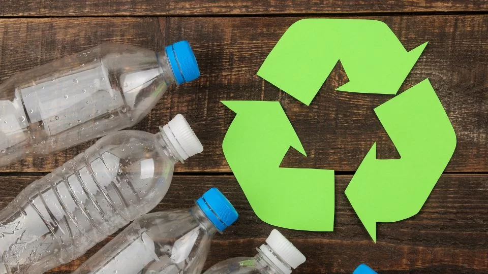
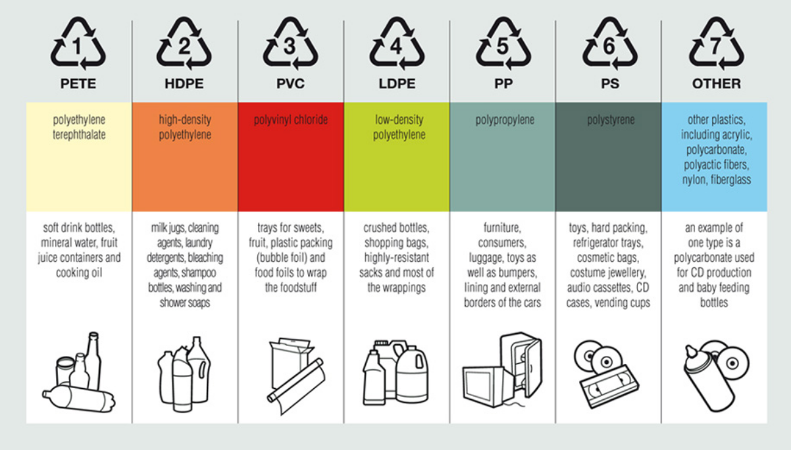
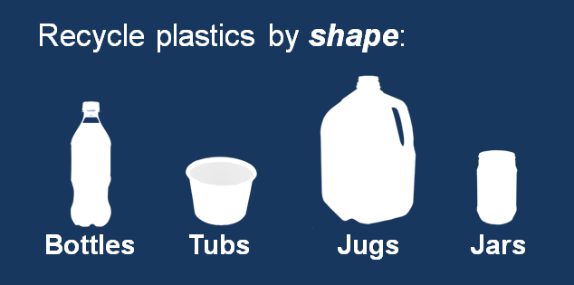

What to do with: Plastic

Plastic is very often a tricky thing to recycle. The most important thing to remember is that the recycling symbol
does not always mean you can recycle it in your cart. Guidelines for that can be found here:
Visit site.
In short, #1 (PETE) or #2 (HDPE) are the most recycled plastics and accepted everywhere. Plastics #3 , #4, #5, #6
and #7 are usually not acceptable at recycling plants. The number is shown in recycling triangle.

For the city of Kirkland specifically, the following applies:
Bottles & Jugs
Ensure that the item does not contain substantial residue
from its contents, and then recycle the bottle. Make sure to screw the cap back on before recycling.
Tubs (Yogurt or Dairy)
Plastic tubs follow a similar protocol as bottles and jugs,
but they do not contain recyclable lids. Even if the lid fits tightly ensure that you throw it away in the trash
before recycling the container. Rinse if necessary to remove residue.

Cups
Plastic cups are recyclable.
Miscellaneous soft plastics, food
serviceware, and wrappers
Wrappers, chip bags, takeout bags, plastic utensils, straws,
and hygiene items (tissues, protective gloves, face masks) are NOT recyclable, and should be put in the garbage.
Dirty items containing food or liquid, dirty paper, and
plastic trays/clamshells are also not recyclable.
Please note that you don’t need to scrub with soap and
water! Just a rinse is usually enough to have your plastics accepted at a recycling plant.
Outside Kirkland?
If you live in a city other than Kirkland, the recycling
guidelines should stay similar with only slight variations. For the most part, bigger cities have more recycling
capabilities. Check with the guidelines linked above if you are confused.